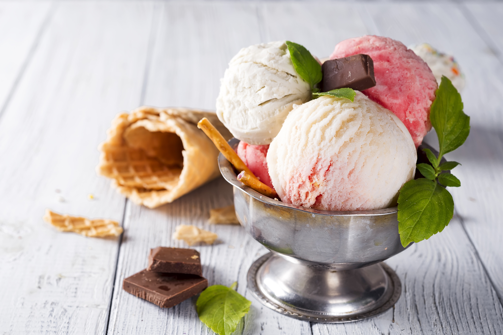

Naminiai ledai – 10 paprastų receptų – Gimtadienio mugė
2020.10.29 08:57
Meniu Idėjos Vaišės Žaidimai Dekoracijos Dovanos Kalendorinės šventės Teminiai gimtadieniai Atostogos Vaikų darbeliai Vaikiškų švenčių mozaika Kaip suplanuoti vaiko gimtadienį? Kur švęsti? Užsakomos pramogos Užsakomos pramogos Vaikų švenčių organizavimas Dovanos Dovanos kūdikiams Žaislai ir žaidimai vaikams Knygos ir žurnalai vaikams Kūrybinei veiklai Drabužiai Papuošalai Vaiko kambariui Valgomos dovanos Kitos dovanos Užsakomos vaišės Užkandžiai ir karšti patiekalai Saldus stalas Šventinė atributika Šventinė atributika Vaikų švenčių dekoravimas Vaišių dekoravimui Vaikų fotografai Idėjos Vaišės Žaidimai Dekoracijos Dovanos Kalendorinės šventės Teminiai gimtadieniai Atostogos Vaikų darbeliai Vaikiškų švenčių mozaika Kaip suplanuoti vaiko gimtadienį? Kur švęsti? Užsakomos pramogos Užsakomos pramogos Vaikų švenčių organizavimas Dovanos Dovanos kūdikiams Žaislai ir žaidimai vaikams Knygos ir žurnalai vaikams Kūrybinei veiklai Drabužiai Papuošalai Vaiko kambariui Valgomos dovanos Kitos dovanos Užsakomos vaišės Užkandžiai ir karšti patiekalai Saldus stalas Šventinė atributika Šventinė atributika Vaikų švenčių dekoravimas Vaišių dekoravimui Vaikų fotografai 27 Geg 2016
Naminiai ledai – 10 paprastų receptų
Naminiai ledai – dalykas šaunus, man labai patinka, kad bent dalį amžino vaikų ledų troškulio galiu numalšinti sveikesniu namuose ruoštu desertu, į kurį tikrai žinau ko, kaip ir kiek įdėjau. O kadangi vasara jau siunčia saulėtus pažadus, ledų sezonas įsibėgėja – pats metas į vieną būrį surinkti naminių ledų receptus. Kad išsirinktume patogiai – pagal mėgiamus produktus ir nuotaiką.
Visus receptus pagaminti paprasta, nereikia nei daugybės laiko, nei jokių specialių agregatų. Tik gero plaktuvo, bet ir šio – ne visiems receptams. Žinoma, priekabių ieškant, galima ginčytis, kad dauguma receptų yra ne ledai, o šaldyti vaisiai, jogurtas ar dar kas nors, tačiau visi žinome, kokią galią vaikams turi žodis ledai , o tam, kad jie valgytų sveikiau, pavadinimų taisyklėms nusižengti galime ir dar begėdiškiau. Tuo labiau, kad ledai tikrai skanūs ir vaikai paprastai juos valgo su džiaugsmu.
Naminiai ledai per 5 minutes – plakta grietinėlė plius kondensuotas pienas lygu naminiai ledai, paruošiami per 5 minutes! Mano pirmasis receptas, pagal kurį ledus gaminu jau šešti metai. Paįvairinimui galime užsiberti kepintų smulkintų žemės riešutų, užtarkuoti šokolado ar įpjaustyti vaisių.
Persikų šerbetas tik iš 2 ingredientų – čia taip pat dedame kondensuotą pieną (jis tarsi sukurtas ledų gamybai – suteikia saldumo ir glotnią ledų konsistenciją vienu metu) ir jį gerai išplakame kartu su šaldytais persikais. Vasarai įsibėgėjus, kai prekystaliai lūžta nuo sunokusių persikų už patrauklią kainą – aš šių vaisių ledams užšaldau ne vieną dėžutę.
Mini ledai ledukų formelėse – jogurtas plius braškės, dar šaukštas cukraus ar medaus. Mano šių metų atradimas: visuose jogurtiniuose ledų receptuose, vietoje paprasto natūralaus, naudoju graikišką jogurtą – jo tvirta konsistencija labai tinka ledams. Ledukų formelėse ruošti ledai puikiai tinka valgyti nuo medinio iešmelio, papuošti kitų ledų indelį.
Arbūziniai ledinukai – dar vieni mini ledai, čia jau paprasčiau nebūna: arbūzą supjaustome sausainių formelėmis ir užšaldome suvėrę ant pagaliukų. Gaivu, žaisminga, sveika!
Ledai, kuriuos galima valgyti pusryčiams – ir čia plaktuvas atostogauja, o mes graikišką jogurtą maišome su pjaustytais vaisiais, šaldome ir mėgaujamės sveiku desertu. Net ir per pusryčius.
Vaisiniai ledai iš kelių sluoksnių – šiam receptui prireiks bene daugiausiai laiko iš čia pateiktų. Atskirus vaisius sutriname sluoksniais ir šaldome – apie viską plačiau skaitome čia .
Žemės riešutų sviesto ir bananų ledai – puikus derinys, kurį smaližiai gali pasaldinti kondensuotu pienu, cukrumi, medumi ar agavos sirupu.
Braškių ir bananų ledai – čia rasite net 2 jų variacijas. Mano Nidos mėgstamieji – juk rožiniai!!!
Dar viena paprasta šaldyto jogurto variacija , primenanti, kad ledų gamybai ir formelės nėra būtinos – juos galima užsišaldyti tiesiog plastikinėse dėžutėse.
Ir pabaigai – ledų tortas . Jį galime susluoksniuoti tiek iš naminių ledų, tiek iš pirktinių – tokiu ir vasarišką šventę vainikuoti drąsiai galime.
Papildymas 2020:
Dar vienus sveikus gardžius ledus galime pasigaminti vien tik iš vaisių – receptas laukia čia .
Taip pat iš sausų pusryčių ir jogurto bei pieno mišinio – receptas čia .
O jei pritrūkome ledų formelių, galime pasigaminti neįprastą, bet vaikams labai patinkantį naminių ledų variantą keksiukų formelėse – viskas išbandyta ir arpašyta čia .
Nuotraukos: Alvilės Rimaitės Previous Post Next Post
Parašykite komentarą Atšaukti atsakymą
Paieška
Kategorijos
Kalendorinės šventės Paprastai ir greitai Pirmasis gimtadienis Mažiausiems Ikimokyklinukams Pradinukams Paaugliams Mergaitėms Berniukams Atostogos Valgomos idėjos Megztos idėjos Siūtos idėjos Gimtadienis laukeNaujausios idėjos
Hario Poterio tema – gimtadieniui, arba Helovino vakarui 23/10/2020 Vaiko gimtadienis namuose – kokias pramogas rinktis? 08/10/2020 Obuolių sūris paprasčiau – kepame orkaitėje 02/10/2020 Tortai, pyragai ir kiti saldumynai be kiaušinių – 35 receptai 04/09/2020 Kai norisi spurgų – paprastas receptas 28/08/2020 Apie mus Gimtadienio mugės kontaktai Autorių teisės ir kita intelektinė nuosavybė Reklamos talpinimo taisyklės© 2020 Gimtadienio mugė - Alvilė Rimaitė, visos teisės saugomos. Svetainė pagaminta – vdizainas@gmail.com
Informuojame, kad sklandžiam svetainės veikimui, jūsų naršymo patirties gerinimui bei rinkodarai naudojame slapukus. Paspaudę „Supratau“ arba naršydami toliau sutiksite su slapukų įrašymu. Savo duotą sutikimą bet kada galėsite atšaukti pakeisdami savo interneto naršyklės nustatymus ir ištrindami įrašytus slapukus. Sutinku Daugiau informacijos apie slapukus rasite čia.- ledai - išsamiai DELFI.lt
- Ledai - parduotuve.ciamarket.lt
- Dadu – Ice cream from natural milk
- Ledai - Intermarket
- Ledai | La Maistas
- Desertai: Ledai - 1000receptų.lt
- Ledai - Vaida Kurpienė
- Ledai - Sraigė ir Varlė
- Naminiai ledai – 10 paprastų receptų – Gimtadienio mugė
- DIONE ledai Klaipėdos pienas AB - Pricer.lt
- ledai - išsamiai DELFI.lt
Pradžia / Ledai Mango ledai su kokoso pienu ir šokoladu Vaida Kurpienė 2020-09-17T11:04:50+03:00 2020-07-01 | Kategorijos: Desertai , Ledai , Sveiki receptai | Žymos: kokosų pienas , Mango , vaisiai |
- Ledai - parduotuve.ciamarket.lt
Irvyda 2020-09-26T09:51:21+03:00 2019-06-27 | Kategorijos: Desertai, Ledai, Sveiki receptai | Žymos: Arbūzas | 0 komentarų Pasidalinkite! Facebook LinkedIn Pinterest El. pašto adresas
- Dadu – Ice cream from natural milk
Ledai MAGNUM WHITE su baltojo šokolado ir sausainių įdaru, 300 g. €5,49. €3,84 €12,80/kg-30%. Ledai MAGNUM WHITE su baltojo šokolado ir sausainių įdaru, 300 g. KARTU REKOMENDUOJAME. Vanil. plombyras BALTOJI VARNELĖ su karamele ir sausainiais, 550 g. €5,99. €3,59
- Ledai - Intermarket
BALTOJI VARNELĖ Ledai vaikams ir Ateiviams Vanilinis plombyras su zefyriukais ir sproginėjančiais saldainiais 120ml 12.42€ už 1 litrą Kaina 1,49 € Į krepšelį
- Ledai | La Maistas
Ledai vafliniuose puodeliuose - vieni populiariausių valgomųjų ledų Lietuvoje bei kitose Pabaltijo valstybėse. Tai vaflinis indelis, užpildytas įvairių skonių ledų mase. Gali būti su įdaru (pavyzdžiui braškių uogienės), glaistu (pavyzdžiui šokolado) bei kitokiais priedais (riešutais, šokolado drožlėmis ir pan.). Mūsų asortimente rasite įvairiausių skonių ledų ...
- Desertai: Ledai - 1000receptų.lt
Ledai DIONE kavos skonio šokoladiniai 100ml. 1.05€ Ledai JUNGA mėlynių ir citrinų skonio 75 ml. 0.56€ Ledai LIONDELUX su vyšnių įdaru 130ml. 1.17€ Ledai Popcorn caramel Baltoji varnelė 950 g. 6.89€ Ledai vanilės skonio BONUS 120ml. 0.35€ Kaip pirkti? ...
- Ledai - Vaida Kurpienė
Ledai. 1 - 3 iš 3 Džersių pieno šokoladiniai ledai Minioti, be pridėtinio cukraus, 125 ml ...
- Ledai - Sraigė ir Varlė
Ledai – iš pieno produktų (pieno, grietinės, grietinėlės) pagamintas ir sušaldytas saldus desertas. Ledais vadinami ir šaldytų sulčių desertai.
- Naminiai ledai – 10 paprastų receptų – Gimtadienio mugė
Sveiki mango ledai iš dviejų ingredientų Greiti grietinėlės ir kondensuoto pieno ledai Sveikuoliški kivių ledai Gaivūs naminiai braškiniai-jogurtiniai ledai be cukraus Greiti bananų ir abrikosų ledai Naminiai karameliniai ledai - tik 2 ingredientai! ...
- DIONE ledai Klaipėdos pienas AB - Pricer.lt
Naminiai ledai – dalykas šaunus, man labai patinka, kad bent dalį amžino vaikų ledų troškulio galiu numalšinti sveikesniu namuose ruoštu desertu, į kurį tikrai žinau ko, kaip ir kiek įdėjau. O kadangi vasara jau siunčia saulėtus pažadus, ledų sezonas įsibėgėja – pats metas į vieną būrį surinkti naminių ledų receptus.
Pradžia / Ledai Mango ledai su kokoso pienu ir šokoladu Vaida Kurpienė 2020-09-17T11:04:50+03:00 2020-07-01 | Kategorijos: Desertai , Ledai , Sveiki receptai | Žymos: kokosų pienas , Mango , vaisiai |
Irvyda 2020-09-26T09:51:21+03:00 2019-06-27 | Kategorijos: Desertai, Ledai, Sveiki receptai | Žymos: Arbūzas | 0 komentarų Pasidalinkite! Facebook LinkedIn Pinterest El. pašto adresas
Ledai MAGNUM WHITE su baltojo šokolado ir sausainių įdaru, 300 g. €5,49. €3,84 €12,80/kg-30%. Ledai MAGNUM WHITE su baltojo šokolado ir sausainių įdaru, 300 g. KARTU REKOMENDUOJAME. Vanil. plombyras BALTOJI VARNELĖ su karamele ir sausainiais, 550 g. €5,99. €3,59
BALTOJI VARNELĖ Ledai vaikams ir Ateiviams Vanilinis plombyras su zefyriukais ir sproginėjančiais saldainiais 120ml 12.42€ už 1 litrą Kaina 1,49 € Į krepšelį
Ledai vafliniuose puodeliuose - vieni populiariausių valgomųjų ledų Lietuvoje bei kitose Pabaltijo valstybėse. Tai vaflinis indelis, užpildytas įvairių skonių ledų mase. Gali būti su įdaru (pavyzdžiui braškių uogienės), glaistu (pavyzdžiui šokolado) bei kitokiais priedais (riešutais, šokolado drožlėmis ir pan.). Mūsų asortimente rasite įvairiausių skonių ledų ...
Ledai DIONE kavos skonio šokoladiniai 100ml. 1.05€ Ledai JUNGA mėlynių ir citrinų skonio 75 ml. 0.56€ Ledai LIONDELUX su vyšnių įdaru 130ml. 1.17€ Ledai Popcorn caramel Baltoji varnelė 950 g. 6.89€ Ledai vanilės skonio BONUS 120ml. 0.35€ Kaip pirkti? ...
Ledai. 1 - 3 iš 3 Džersių pieno šokoladiniai ledai Minioti, be pridėtinio cukraus, 125 ml ...
Ledai – iš pieno produktų (pieno, grietinės, grietinėlės) pagamintas ir sušaldytas saldus desertas. Ledais vadinami ir šaldytų sulčių desertai.
Sveiki mango ledai iš dviejų ingredientų Greiti grietinėlės ir kondensuoto pieno ledai Sveikuoliški kivių ledai Gaivūs naminiai braškiniai-jogurtiniai ledai be cukraus Greiti bananų ir abrikosų ledai Naminiai karameliniai ledai - tik 2 ingredientai! ...
Naminiai ledai – dalykas šaunus, man labai patinka, kad bent dalį amžino vaikų ledų troškulio galiu numalšinti sveikesniu namuose ruoštu desertu, į kurį tikrai žinau ko, kaip ir kiek įdėjau. O kadangi vasara jau siunčia saulėtus pažadus, ledų sezonas įsibėgėja – pats metas į vieną būrį surinkti naminių ledų receptus.
